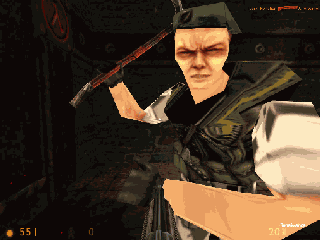

Buts du projet
Le projet Rational Autonomous Cybernetic Commandos (RACC) vise à implémenter une intelligence artificielle totalement rationelle dans des personnages non joueur (NPCs ou robots cybernétiques ou 'bots') totalement autonomes dont les principales caractéristiques sont l'analyse environnementale en temps réel et l'intelligence d'équipe de commandos. RACC est un bot non waypointé capable de travailler en équipe.
Half-Life: un bot faisant un carnage dans Crossfire
Les waypoints sont peut-être la méthode de détermination d'itinéraire la plus ancienne dans le développement d'IA. Ce sont des emplacements pré-calculés du monde virtuel qui peuvent être reliés ensemble pour former des itinéraires. Typiquement tous les travaux précédemment réalisés sur des adversaires cybernétiques dans les jeux de combat subjectifs reposaient sur les waypoints. Ceci finissait fatalement par d'énormes bases de données d'emplacements pré-calculés qui devaient être altérées à chaque fois que le monde virtuel était lui-même altéré: un changement de carte, une modification sur celle-ci ou une nouvelle carte, tout ceci nécessitant leurs fichiers de waypoints correspondants pour que les personnages de l'IA se déplacent correctement. Si ces informations n'étaient pas disponibles pour le monde virtuel actuellement en cours de jeu, tous les NPCs étaient réduits à se heurter aveuglément aux murs et à s'orienter de manière totalement aléatoire.
L'avantage des waypoints était que le NPC n'avait pas besoin de 'sentir' son environnement ni de le visualiser comme un humain; il lui suffisait juste de suivre à l'aveugle des séries récursives d'itinéraires aisément calculés afin de se mouvoir dans le monde virtuel.
Les inconvénients étaient que non seulement le comportement de tels NPCs était facilement prévisible en temps réel, mais surtout il s'agissait d'une manière de jouer totalement aveugle qui occasionnait souvent des actions idiotes; enfin l'intégralité du monde virtuel n'était pas nécessairement couverte par des waypoints et ainsi les NPCs se retrouvaient souvent à faire les mêmes actions, de la même manière et aux mêmes endroits. Leur facilité d'utilisation et la possibilité d'établir des itinéraires de waypoints relativement complexes étaient totalement couvertes par un comportement prévisible, aveugle et pas ressemblant du tout à l'équivalent humain.
Le défi des Rational Autonomous Cybernetic Commandos est d'implémenter aussi près que possible une manière de penser humaine dans des NPCs autonomes.
Un extrait significatif de discussion sur les forums de Botman
Half-Life® a été conçu suivant une architecture client/serveur. Le moteur de jeu lui-même, en charge de l'affichage 3D, traitement sonore, calcul des mouvements, application des règles de la physique du monde virtuel, et gestion des commandes des joueurs (telles que la jonction, la sauvegarde, l'assignation de touches de raccourcis...) peut être décrit comme le 'serveur' alors que la DLL du côté du joueur, en charge de passer les commandes sus-citées au moteur sous forme de paquets réseau peut être décrite comme le client.
Quand il est installé pour un MOD particulier, la DLL RACC va se positionner entre la DLL serveur et la DLL client et tâche de passer les paquets réseau de l'une à l'autre de manière transparente. Grâce à cette sorte de 'piratage' de la relation client/serveur, la DLL peut ainsi intercepter des paquets d'information intéressants en provenance du moteur, mais surtout peut imiter des connections de nouveaux clients au vol.
Mesdames et messieurs, voici les bots.
Ces clients fantômes, une fois intégrés dans le monde virtuel, ont besoin d'être contrôlés à chaque trame vidéo du jeu. C'est ici que la DLL intercepte l'appel de la fonction StartFrame(), qui se produit à chaque nouvel instant du temps virtuel, et rajoute son propre code à exécuter qui va faire 'penser' les faux clients. Avant d'appeler la vraie fonction StartFrame(), la DLL passe tous les faux clients un à un et appelle une fonction BotThink() pour eux.
La fonction BotThink() est le coeur de l'IA d'un personnage cybernétique. Cette fonction est en charge de nombreux tests pour déterminer si le bot doit se déplacer, vérifier la présence d'ennemis, faire une action particulière comme provoquer ses ennemis ou demander une couverture à son équipe, etc. Le comportement voulu est alors obtenu en appelant la fonction appropriée dans le domaine comportemental correspondant: navigation, combat, communication, etc. Il semble évident qu'aucune de ces fonctions ne doit être bouclée. Chacune doit se terminer et retourner sa valeur dans le temps de trame où elle a été appelée.
Deathmatch Classic: un bot armé d'une barre de fer (©)

Pour chaque trame, l'intégralité de l'IA décisionnelle de chaque bot est contenue dans et à travers cette fonction BotThink(). Investiguer plus profondément dans cette fonction montrera de nombreux appels de fonctions, pointant vers différents endroit du code, dépendant de la situation dans laquelle se trouve le personnage cybernétique: échantillonnage du champ de vision, gestion du mouvement sur une échelle, feu sur une menace ennemie visible...
D'un autre côté, l'IA réactive, en charge des réflexes et des réactions inconscientes, possède une implémentation côté client (cf. bot_client.cpp) et est invoquée chaque fois qu'un message réseau est envoyé du moteur serveur aux clients. Ceci peut se produire quand le personnage cybernétique est blessé par les balles d'un ennemi invisible, par exemple. Il s'agit essentiellement de la partie sensorielle de l'IA. Alors que l'IA décisionnelle scanne volontairement ses sens pour réunir des informations sur le monde virtuel, l'IA réactive ressent ponctuellement l'environment, sous l'influence externe de stimuli.
Et voilà comment les bots pensent.
Si vous êtes intéressés par des explications plus détaillées sur le code source, davantage d'informations techniques sont disponibles dans le readme.txt original de Botman, fourni avec sa maquette HPB. Il s'agit d'un tutoriel complet pour l'étude du HPB. Indispensable.
Botman est également l'auteur d'un tutoriel C++ qui explique très bien la base des classes et héritages en C++. Même si la connaissance du C est suffisante pour travailler le code, les programmeurs doivent se souvenir que l'interface avec le moteur Half-Life est en C++.
Le code source des Rational Autonomous Cybernetic Commandos est libre pour chacun à voir et utiliser. Une forte emphase a été placée sur l'exactitude, la tenue, la lisibilité et le commentaire.
Use the source, Luke!

Avtomat Kalashnikov AK-47